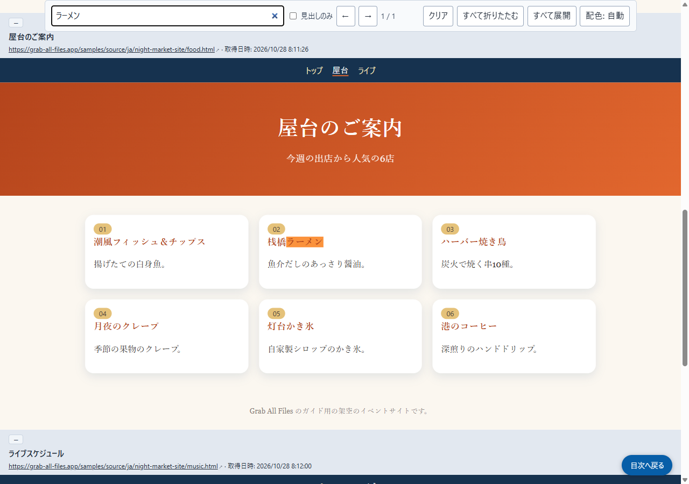

Grab All Files の実際の出力サンプル
3ページを元の見た目のまま目次・検索付きのHTMLにまとめた結果（Pro版）
色や書体に特徴のある架空のイベントサイト（トップ・屋台・ライブの3ページ）を、「元の見た目のまま」「目次・検索付きHTML」で1つのHTMLにまとめました。各ページは元のデザインのまま枠の中に入り、枠の上に取得元のアドレスと取得日時が出ます。先頭の目次から各ページへ移動でき、上部の検索欄で3ページ全体を検索できます。
出力ファイル
保存したHTMLを開き、「ラーメン」で検索したところ（サイトで撮った画面）

作成条件
- 元にしたページ
- /samples/source/ja/night-market-site/
- 拡張機能
- Grab All Files 5.8.31
- ブラウザ
- Chrome 156.0.8078.48 (Windows 11)
- プラン
- Pro版
- 作成日
- 2026-10-28
- 設定
- 集めるページ：リンクされたページ（3ページ）
- 見た目：元のページのまま
- まとめ方：目次・検索付きHTML
- 画像：ファイルの中に取り込む（オフラインで表示）